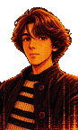
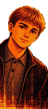

Ю
Юлия — семинары
была недавно
▼ щёлкни
Как играть
Ты играешь за Глеба. Глеб — купидон: каждым выбором он решает судьбу Егора.
Нажимай на окно с текстом (или пробел), чтобы читать дальше.
В важные моменты появляются карточки с выбором. От них зависит, чем кончится вечер.
Глеб умеет перематывать время. После концовки можно вернуться назад, и Глеб запомнит, что узнал. Это видно по синей плашке «Глеб помнит» наверху.
Знания открывают новые варианты, они подсвечены синим. Хорошая концовка без перемотки не открывается.
«♫ звук» справа вверху выключает музыку (или клавиша M).
Говорят, иногда лучший ход — вообще ничего не делать…
Пройдись по бару: нажимай на людей
00:00
Егор
Егору.
В память о 3 ноября 2025 года.
Глава 1
POWERHOUSE
Глеб — купидон. Сегодня он решает судьбу Егора.
щёлкни, чтобы начать